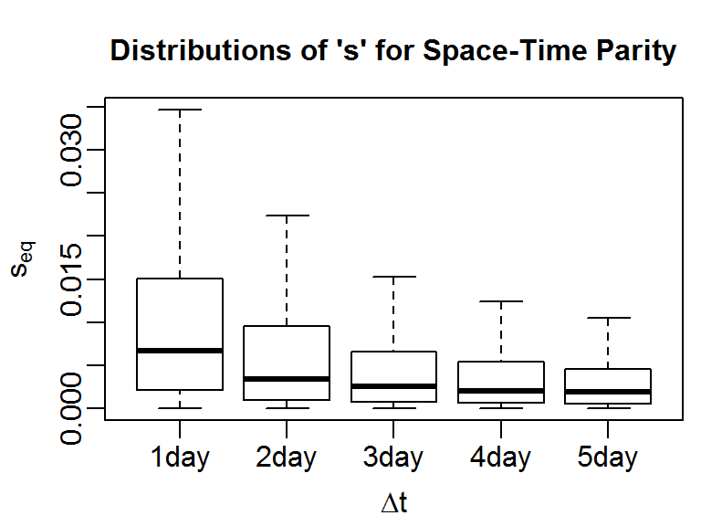
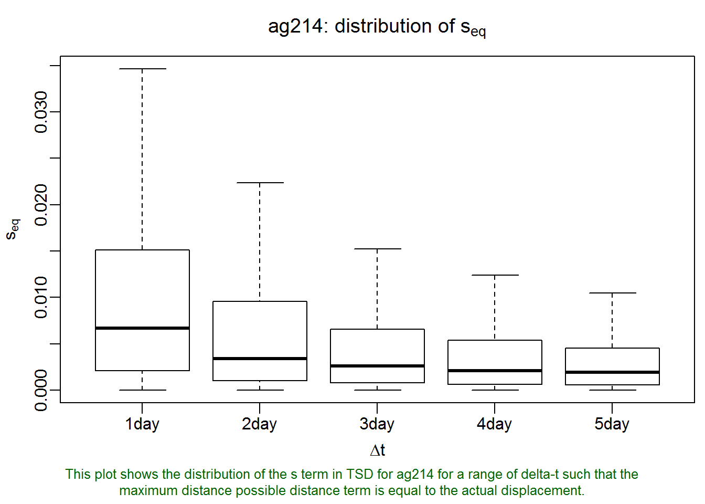

This T-LoCoH tip demonstrates how to get the actual values of s that produce space-time partity from the ‘sfinder’ boxplot:

In T-LoCoH, ‘s’ is a parameter that controls the degree to which the time difference between two locations is factored into the calculation of their ‘distance’, for the purposes of identifying which points are ‘nearest neighbors’. s=0 corresponds to time being ignored, in which case the distance metric is simply Euclidean distance.
Selecting s is subjective (i.e., up to the analyst), but there are principles we can use to select a value of ‘s’ that will result in the types of hulls that will best illuminate our research question and data. If the locations have no time stamps, then we have no option but to select s=0. Some research questions don’t require hulls that are localized in space and time. For example, if all we’re really interested is a classic ‘home range’, and we don’t really care if our constructed home range differentiates temporal partitioning of space, we could keep things simple and let s=0. Another case where you may want to ignore time is if sampling was so ad-hoc that it wouldn’t make sense to consider the time between observations (which has more to do with unrelated sampling issues than the movement) as a factor in nearest neighbor selection.
Incorporating time into nearest neighbor selection is most useful when the sampling frequency follows a consistent pattern (i.e., either regular throughout the entire period of observation or regular when the unit was programmed to record data). For consistently sampled locations, there are two recommended approaches to selecting ‘s’. If there is a frequency in the movement that is particularly important to differentiate (e.g., daily resting pattern), you could pick a value of ‘s’ whereby for that time period the distance in time is equivalent to the distance in space. This is known as the ‘space-time parity method’, and the central tool for using this method is the so-called ‘s-finder’ plot (described further below).
The second method for selecting s, which is not discussed here, is based on choosing the desired proportion of time-selected hulls (see Lyons et al 2013 for details).
The function lxy.plot.sfinder will plot the distribution of s values that achieve space-time parity for different windows of time. If you are interested in a particular time period, you can pass that value (expressed in seconds) as the delta.t argument. In the following example (using hourly tracking data for a small antelope), we plot the distribution of s that achieves space-time parity for 1 to 5 days.
require(tlocoh); require(sp)
summary(ag214.lxy)## Summary of LoCoH-xy object: ag214.lxy
## ***Locations
## id num.pts dups
## ag214 10702 205
## ***Time span
## id begin end period
## ag214 2009-09-02 2010-04-14 224 days
## ***Spatial extent
## x: 585777 - 601813
## y: 7878752 - 7890606
## proj: NA
## ***Movement properties
## id time.step.median d.bar vmax
## ag214 1800 (30min) 57.35 1.16
## ***Ancilliary Variables:
## -none-
## ***Nearest-neighbor set(s):
## none savedlxy.plot.sfinder(ag214.lxy, delta.t = 1:5 * 3600 * 24)
Basically, what this plot says is that if we let s=0.007 (the median value of the first box plot), then for all pairs of points that were observed one day apart, the difference in time converted to spatial units will, on average, be equal to their actual distance in space in the space-time distance measure used by T-LoCoH. By extension, this also means that if two points were recorded further apart than one day, when we compete their ‘distance’ the difference in time would play a bigger role than their distance in space. This could be a reasonable selection for s if our animal has daily movements patterns such that we don’t want a point that was recorded several days away to be a serious candidate as a neighbor (even if they were actually quite close together on the ground). Likewise for points record 2-5 days apart.
The lxy.plot.sfinder function produces the first boxplot by taking all pairs of points exactly 24 hours apart (within a threshold specified by delta.t.err) and computing the value of s where the time-term in the time-scaled-distance formula (see Lyons et al 2013) equals the actual Euclidean distance. We can visually estimate the median value of s from this boxplot, but we can also find the actual value. Let’s generate the plot again, but this time save the result to a variable.
my_plot <- lxy.plot.sfinder(ag214.lxy, delta.t = 1:5 * 3600 * 24)Now let’s see what my_plot contains.
str(my_plot)## List of 1
## $ ag214.sfinder:List of 5
## ..$ fn : NULL
## ..$ dim : NULL
## ..$ desc : chr "This plot shows the distribution of the s term in TSD for ag214 for a range of delta-t such that the maximum distance possible "| __truncated__
## ..$ svals:List of 5
## .. ..$ 86400 : num [1:10652] 0.01636 0.00853 0.00776 0.00295 0.00388 ...
## .. ..$ 172800: num [1:10604] 0.000681 0.002397 0.000628 0.001675 0.001789 ...
## .. ..$ 259200: num [1:10559] 0.001079 0.002154 0.000582 0.000299 0.001007 ...
## .. ..$ 345600: num [1:10511] 0.001777 0.000882 0.000909 0.000394 0.000357 ...
## .. ..$ 432000: num [1:10464] 0.000447 0.000406 0.001664 0.00085 0.000217 ...
## ..$ id : chr "ag214"As we can see, the lxy.plot.sfinder function returns a list object with the results. Each element of this list is another list wth the results for one of the individuals (which in our case is only one, an individual called ‘ag214’). The svals element contains a list of the actual values of s that produce space-time parity, with one list element for each of the delta-t values. To get all of the values of s that balances space and time equally for all pairs of points 24 hours (86400 seconds) apart, we can run:
s_parity_vals_24hrs <- my_plot[[1]]$svals[["86400"]]
length(s_parity_vals_24hrs)## [1] 10652median(s_parity_vals_24hrs)## [1] 0.006681In a similar manner, we can get the distribution of s for other values of delta.t.
T-LoCoH Tips. If you find this tip useful, or have feedback or another question on how to use T-LoCoH, please contact the package author. (c) 2014